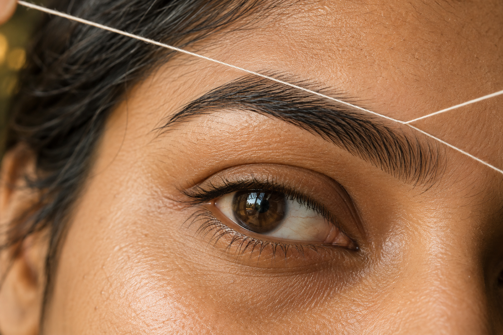
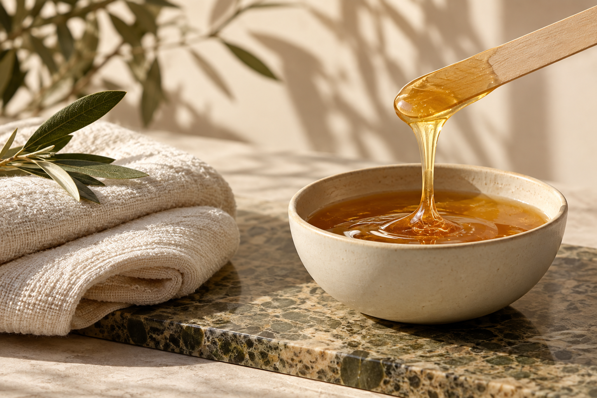
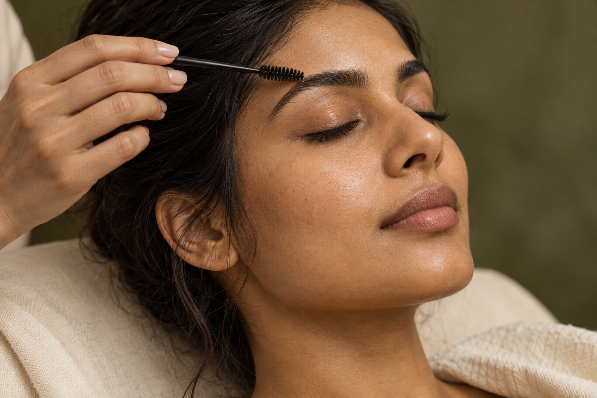

Townsville / Eyebrow Threading & WaxingA finer
A finer
line.
Brow threading & waxing,
thoughtfully shaped.


The thread
Drag the progress control to review the transition. This study uses crossfades, masks and a drawn line. The finished site should connect this sequence to native scroll and hand the panels to the treatment section.
Campaign photographs are conceptual. They are not client results or photographs of the business team.